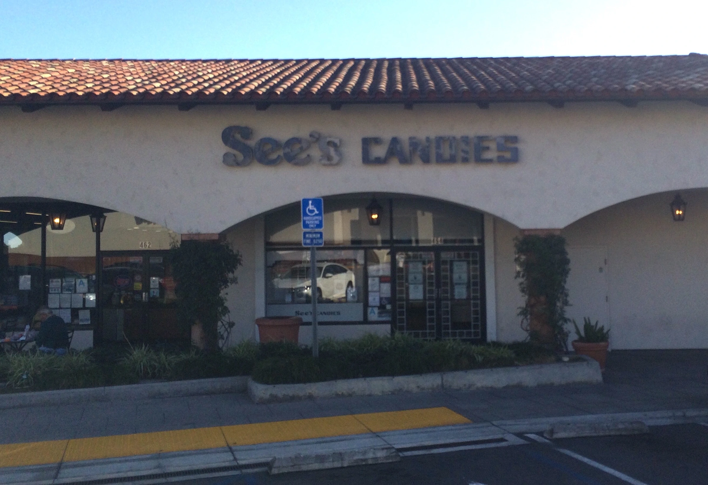
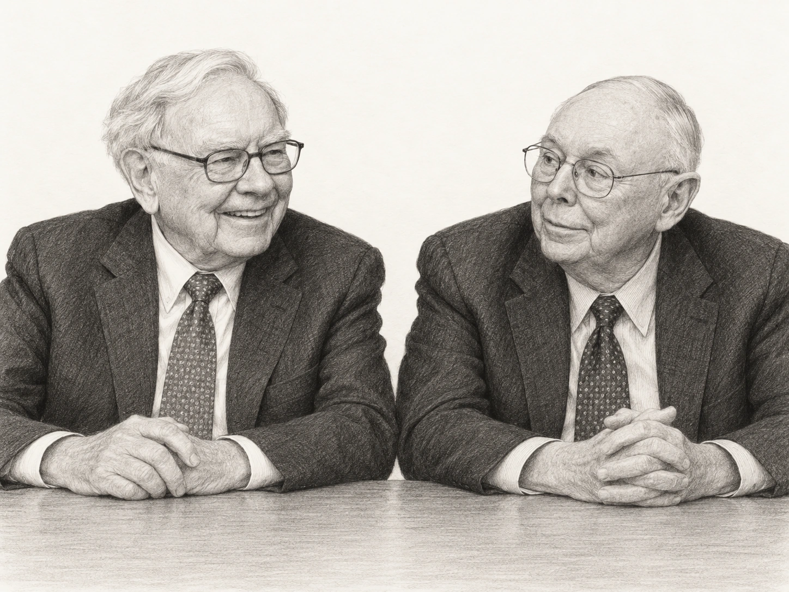

Charlie Munger was born in Omaha, Nebraska, on 1 January 1924, and grew up a few hundred feet from the house where Warren Buffett now lives. As a teenager he worked in the grocery store owned by Mr Buffett's grandfather, as Warren Buffett himself did a few years later, although the two of them did not meet until 1959, by which time Charlie Munger had long since left Omaha behind.
By then he had already lived a good deal of a life. He had studied mathematics at the University of Michigan until early 1943, when, a few days after his 19th birthday, he left to join the US Army Air Corps, which sent him to study meteorology at Caltech in California. He married Nancy Huggins in 1945, and after the war he applied to Harvard Law School, which at first turned him down because he did not have an undergraduate degree. He was admitted after Roscoe Pound, a former dean of the school, stepped in on his behalf, and he graduated with high honours in 1948.
The years that followed were hard ones. Charlie Munger moved to California and practised law in Los Angeles, but his marriage ended in divorce in 1953, and two years later his son Teddy died of leukaemia at the age of nine. He married again in 1956, to Nancy Barry, and set about building a second life, so that by the end of the decade he was a successful property lawyer with a growing family and, increasingly, an interest in investing of his own.
It was on a visit home to Omaha in 1959 that the 35-year-old Charlie Munger was introduced to Warren Buffett, who was then 28 and running an investment partnership, and it was this relationship that would shape the rest of both of their careers. Mr Buffett later wrote that Charlie Munger "never tired of repeating his maxims about business and investing to me, and his logic was irrefutable."
In 1962 Charlie Munger did two things at once. He was one of the founders of the law firm Munger, Tolles & Olson, which still carries his name, and at the same time he started managing money through a partnership called Wheeler, Munger & Company. Within a few years he had given up the law altogether for investing.
The partnership record stands on its own. From 1962 to 1975 it returned 19.8% a year, compounded, before the general partners took their share, while the limited partners, who were the outside investors, received 13.7% a year. The Dow, over the same period, managed just 5.0%.
However, the road was a rough one, because Charlie Munger held very few shares and, as Mr Buffett puts it, "was willing to accept greater peaks and valleys of performance". The partnership lost 31.9% in 1973 and a further 31.5% in 1974, so that $100 invested at the start of 1973 was worth just under $47 two years later, and although it gained 73.2% in 1975, that only took the $100 back to around $81. An investor who needed the money during a fall like that, or who had borrowed to invest, could easily have been forced to sell at the worst possible time, and Charlie Munger wound up the partnership in 1976.

While the partnership was running, Charlie Munger was also changing the way Warren Buffett invested. In those earlier years Mr Buffett was purchasing what he called cigar butts, meaning poor companies selling at very cheap prices, a strategy he had learned from Benjamin Graham and one that had worked very well while the sums were small. It was much less suitable, however, for a company that was getting larger and needed somewhere to keep its money for many years.
When Warren Buffett took control of Berkshire Hathaway in 1965, at that time a struggling textile company, Charlie Munger told him that he had made a mistake, and then told him how to correct it. His advice, as Mr Buffett later set it down, was: "Forget what you know about buying fair businesses at wonderful prices; instead, buy wonderful businesses at fair prices."
The Berkshire Hathaway mills showed why this advice mattered. The managers could purchase new machinery that reduced their costs, and each purchase looked sensible on its own, but their competitors could purchase the same machinery, and once enough of them had done so, lower costs simply led to lower selling prices. The savings went to the customers rather than to the owners, and the mills were eventually closed in 1985.
The purchase that put Charlie Munger's advice into practice came in 1972, when the family that controlled See's Candies, a Californian chocolate-maker, wanted $30m for the business. Charlie Munger said it was worth that much, whereas Warren Buffett did not want to pay more than $25m, and "wasn't all that enthusiastic even at that figure". The price was three times the value of the company's net tangible assets, meaning its physical assets less its debts, which, as Mr Buffett puts it, "made me gulp".
However, the See's family accepted the $25m, and the purchase went ahead through Blue Chip Stamps, a company in which Charlie Munger, Warren Buffett and Berkshire Hathaway all had large stakes. "My misguided caution could have scuttled a terrific purchase," Mr Buffett wrote more than forty years later.

See's was never a fast-growing business, selling 16m lb of chocolate in 1972 and 31m lb in 2007, which is growth of just 2% a year, and yet by 2007 it was earning $82m a year before tax, against less than $5m when it was purchased. Its customers were loyal enough to let it keep raising its prices, and it needed very little money to run. The capital required to operate the business went from $8m at the time of purchase to $40m in 2007, an increase of just $32m, while over the same 35 years See's earned $1.35bn before tax. Putting this another way, almost all of the profit could be taken out of the business each year and, after tax, used to purchase other businesses.
"It took Charlie Munger to break my cigar-butt habits and set the course for building a business that could combine huge size with satisfactory profits," says Mr Buffett.
In 1978 Charlie Munger became vice-chairman of Berkshire Hathaway, a post he held for the rest of his life. From 1984 to 2011 he was also chairman of Wesco Financial, a Berkshire Hathaway subsidiary in Pasadena, and from the late 1970s he was chairman of Daily Journal, a legal publisher and software business in Los Angeles that he had bought with a partner.
Charlie Munger set out the thinking behind See's in a speech at the University of Southern California business school in 1994. "Over the long term, it's hard for a stock to earn a much better return than the business which underlies it earns," said Mr Munger, so a business that earns 6% on its capital over 40 years will give its owner around 6% a year, even if the shares were purchased at a large discount. "Conversely, if a business earns 18% on capital over 20 or 30 years, even if you pay an expensive looking price, you'll end up with a fine result."
That does not mean the price can be ignored, however, because a good business can still be a poor investment if too much is paid for it. Take a company that earns £1 a share and whose shares cost £30, and suppose that over the next ten years its earnings double to £2 a share. If by then investors are only prepared to pay 15 times earnings instead of 30 times, the share price is still £30, and although the business has done well, the shareholder has made nothing in ten years before dividends.
Stock picking isn't the only thing that Charlie Munger was known for. In the same 1994 speech he argued that investors needed ideas from many different subjects, and not just from accounting. "You've got to have models in your head," said Mr Munger, because "to the man with only a hammer, every problem looks like a nail."
He paid particular attention to incentives, observing that "what makes sense for the investor is different from what makes sense for the manager", and the same reasoning applies inside a company, where a chief executive who is paid for making the business bigger may purchase another business even when it does very little for the shareholders.

Charlie Munger also looked outside the United States, and in 2008, at his urging, Berkshire Hathaway purchased a stake in BYD, a Chinese maker of batteries and electric cars, for $230m. He later called it "one of the most remarkable venture capital-type successes in the history of the world".
He stepped down as chairman of Daily Journal in March 2022, at the age of 98, but stayed on the board and carried on looking after its share portfolio, and he remained open about the investments that went wrong. When he was asked at the Daily Journal shareholder meeting in February 2023 about Alibaba, the Chinese internet retailer whose shares the company had purchased, he replied: "I regard Alibaba as one of the worst mistakes I ever made." He had been attracted by Alibaba's position on the Chinese internet and, as he put it, "didn't stop to realize that it's still a goddamn retailer". This was a mistake about the quality of a business, which was the very judgement on which his reputation had been built.
These later records cannot simply be added to his partnership figures, because Daily Journal shareholders owned the operating business as well as the share portfolio, and the returns at Berkshire Hathaway were not Charlie Munger's alone. The partnership figures are the only record that belongs just to him.
Away from investing, Charlie Munger stayed on the board of Costco, the American retailer, until the end of his life, and gave large sums to universities, including $110m to the University of Michigan in 2013, although he never signed the Giving Pledge, saying that he had already passed much of his wealth to his children. A collection of his speeches, "Poor Charlie's Almanack", was published in 2005.
Charlie Munger died in California on 28 November 2023, 33 days before his 100th birthday. In his letter to shareholders a few months later, Warren Buffett wrote: "Charlie was the 'architect' of the present Berkshire, and I acted as the 'general contractor' to carry out the day-by-day construction of his vision." Charlie Munger never sought the credit for this, Mr Buffett wrote, and when Mr Buffett made mistakes, Charlie Munger never reminded him of them. He described their relationship as "part older brother, part loving father".
The record
| Year | Dow | Munger partnership, overall | Munger partnership, limited partners |
|---|---|---|---|
| 1962 | −7.6% | +30.1% | +20.1% |
| 1963 | +20.6% | +71.7% | +47.8% |
| 1964 | +18.7% | +49.7% | +33.1% |
| 1965 | +14.2% | +8.4% | +6.0% |
| 1966 | −15.7% | +12.4% | +8.3% |
| 1967 | +19.0% | +56.2% | +37.5% |
| 1968 | +7.7% | +40.4% | +27.0% |
| 1969 | −11.6% | +28.3% | +21.3% |
| 1970 | +8.7% | −0.1% | −0.1% |
| 1971 | +9.8% | +25.4% | +20.6% |
| 1972 | +18.2% | +8.3% | +7.3% |
| 1973 | −23.1% | −31.9% | −31.9% |
| 1974 | −13.1% | −31.5% | −31.5% |
| 1975 | +44.4% | +73.2% | +73.2% |
| 1962–75, compounded annually | 5.0% | 19.8% | 13.7% |
| 1962–75, overall gain | 96.8% | 1,156.7% | 500.1% |
Figures are from the table for Charlie Munger's partnership in Warren Buffett's 1984 article "The Superinvestors of Graham-and-Doddsville", in US dollars. "Overall" is the return before the general partners' share, and "limited partners" is what the outside investors received. They are not the returns of Berkshire Hathaway or Daily Journal.
Life in dates
- 1924Born in Omaha, Nebraska, on 1 January.
- 1943Leaves the University of Michigan to join the US Army Air Corps.
- 1945Marries Nancy Huggins.
- 1948Graduates from Harvard Law School and moves to California.
- 1953Divorces. His son Teddy dies in 1955.
- 1956Marries Nancy Barry.
- 1959Meets Warren Buffett in Omaha.
- 1962Co-founds the law firm Munger, Tolles & Olson and starts the Wheeler, Munger & Company partnership.
- 1972Blue Chip Stamps purchases See's Candies for $25m.
- 1973–74The partnership loses 31.9% and then 31.5%.
- 1976Winds up the partnership.
- 1978Becomes vice-chairman of Berkshire Hathaway.
- 1984Becomes chairman of Wesco Financial, a post he holds until 2011.
- 1994Gives his speech on "elementary, worldly wisdom" at the University of Southern California.
- 2005"Poor Charlie's Almanack" is published.
- 2008Berkshire Hathaway purchases its stake in BYD.
- 2013Gives $110m to the University of Michigan.
- 2022Steps down as chairman of Daily Journal on 28 March.
- 2023Calls Alibaba one of his worst mistakes at the Daily Journal meeting on 15 February. Dies on 28 November, aged 99.
Sources
- Buffett's 2014 letter: the See's Candies purchase, Munger's upbringing, the 1959 meeting, the "blueprint".
- Buffett's 2023 letter: tribute to Charlie Munger.
- Buffett's 2007 letter: See's Candies sales, earnings and capital.
- Buffett's 1985 letter: the textile mills.
- Buffett's 1989 letter: cigar butts.
- Warren Buffett, "The Superinvestors of Graham-and-Doddsville" (1984): the partnership record.
- Charlie Munger, "A Lesson on Elementary, Worldly Wisdom" (1994): returns on capital, models, incentives.
- Daily Journal 2023 shareholder meeting, questions and answers: Alibaba and BYD.
- Daily Journal press release, 28 March 2022: change of chairman.
- Daily Journal: Charles T. Munger, 1924–2023: law firm and Daily Journal roles.
- Wikipedia: Charlie Munger: education, military service, marriages, Wesco, philanthropy.